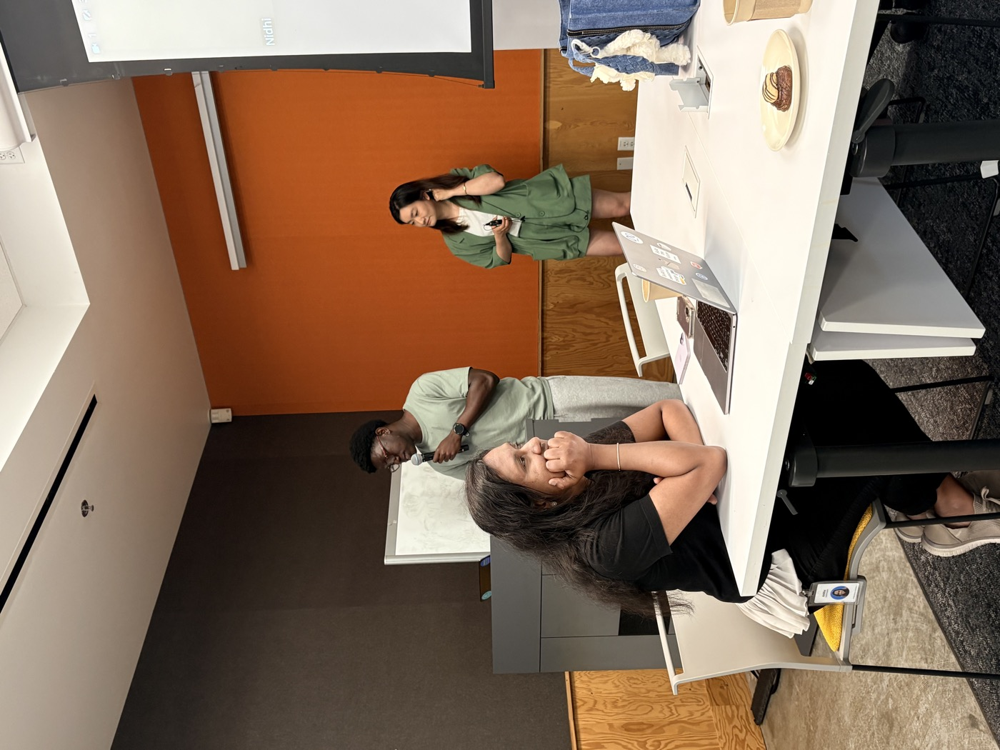
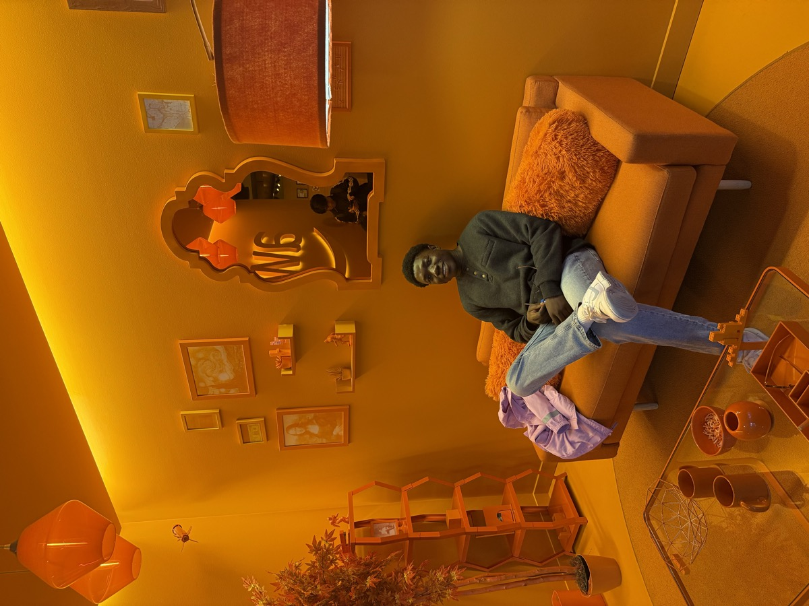

Amazon Web Services
Working on backend systems at AWS. Additional project details will be added as the role develops.
Software engineering and research work across backend systems, graph databases, safety infrastructure, applied research, and full-stack product development.
Working on backend systems at AWS. Additional project details will be added as the role develops.
Designed and built an end-to-end proactive content moderation pipeline for Messenger group chats, processing high-volume events to detect policy-violating names and images before they reached teen users.
Built an async processing path through Meta's ML integrity infrastructure, including serialization schemas, privacy zone integration, model configuration, classifier routing, and enforcement actions.

Worked on NeptuneDB query optimization, implementing a worst-case optimal join algorithm and building heuristics for query planning.
Built test coverage with LUBM and WatDiv benchmarks and prototyped a Java query plan comparison tool for evaluating complex graph query plans.

Worked on distributed AI model training and data storage systems for dairy analytics.
Conducted bioacoustics research on source separation and sound source localization.
Developed and integrated a React-Flask/SQLAlchemy onboarding platform that improved client onboarding workflows, matched patients with BIPOC therapists, and supported product quality through client-aligned testing.